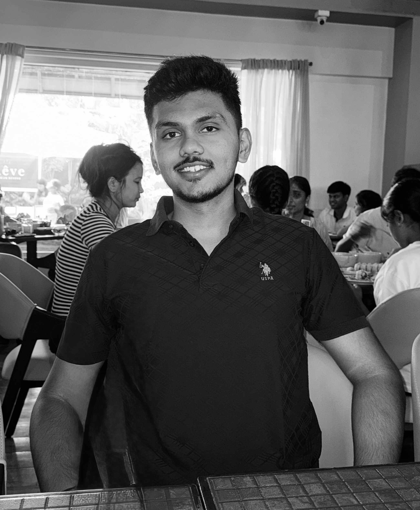

Pune, India 🇮🇳Hey! I'm Viraj Kabbur
Product manager, tech enthusiast, and creative at heart — building at the intersection of technology, business, and design.
I love building products that sit at the intersection of tech, business, and design. From mindmaps to deployed apps — I take ideas all the way through.
When I'm not thinking about product strategy, you'll find me on two wheels, behind a camera, or writing about the things that fascinate me.
A collection of my work, thoughts, and passions — profession, photography, writing, and everything in between. Glad you're here. Welcome!